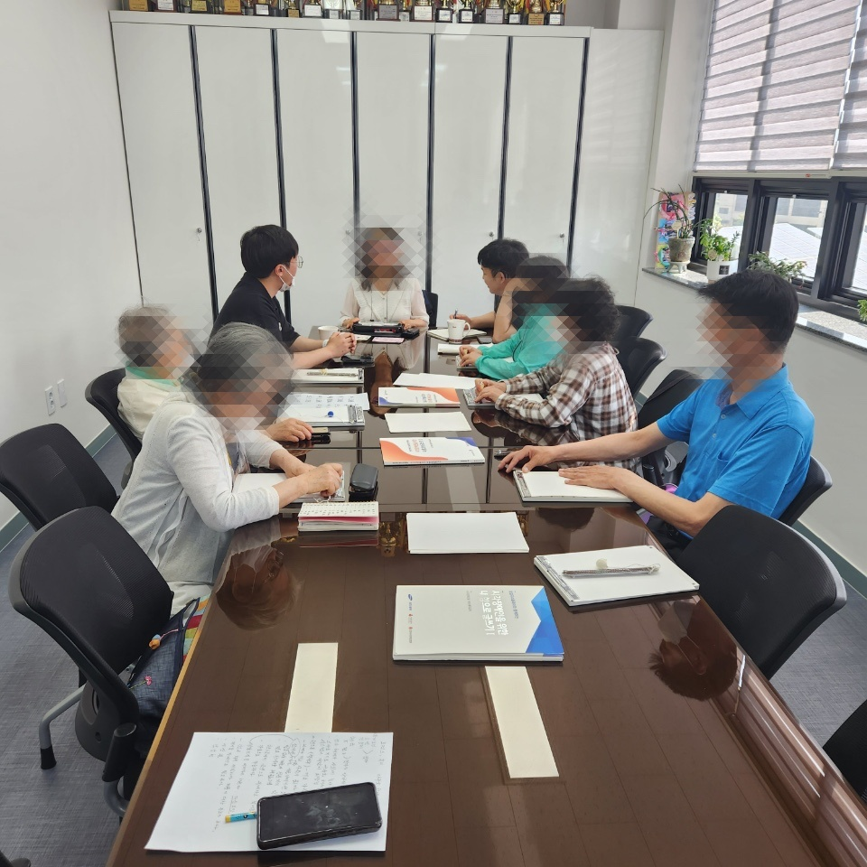

Overview: 장애 플러스 기술 해커톤 대회를 위한 조사
2023 장애인 분야 해커톤 대회에 친구와 참가를 하게 되었다. 사실 원래 친구가 국토교통 분야 데이터 경진대회에 나가자고 해서 AI와 모바일 서비스를 결합할 수 있는 주제만 1주일 넘게 찾아 헤맸다… 그러다가 결국 장애 플러스 해커톤을 발견하게 되었고 여기에 참가하기로 했다. 사실 원샷 한솔 이라는 유튜브를 가끔 보고 있었는데 1년 전 쯤 캔 음료수 뚜껑 부분에 점자가 있는데 이 점자들이 “탄산” 혹은 “음료”라고 표기가 되어있다고 하는 영상을 본 기억이 있다. 당시 정말 잘못되었다는 생각을 했고 몇몇 분들은 이러한 문제점을 제조사에 개선하라고 항의하기도 했다. 근데 그때도 AI를 한창 공부하고 있을 때였는데 막상 AI를 활용해 개선할 생각을 못했다. 지금은 그래도 AI에 대해서 아직 많이 배워야 할 것이 산더미지만 비전 분야에서만큼은 어느 정도 파악하고 있다고 생각한다. 그래서 CNN 분류 모델을 활용해서 사진을 찍으면 시각 장애인에게 어떤 음료수인지 분류하는 모바일 서비스를 출시하자고 친구에게 제안을 했다. 그 전에 설리번이라는 어플이 있는데 이걸 설치하고 몇 번 실험을 해보니 Image Captioning 모델을 장착한 것 같다. 음료수 로고가 보이는 정면을 찍으면 꽤 정확하게 음료의 종류를 알려주지만 뒷 면의 성분표 등을 찍게되면 불필요한 수 많은 정보까지 알려주게 된다. 그래서 이를 가지고 iOS 개발자 친구와 함께 오산시 시각장애인 협회에 방문해 시각장애인 분들과 인터뷰를 진행했다. 생각보다 설리번이라는 어플의 존재를 모르시는 분들이 많이 계셨다. 심지어 직원분들까지도… 비록 정확하지 않더라도 시각장애인분들에게는 정말로 큰 도움이 되는 어플이어서 모르셨다는게 안타까웠다. 설리번 어플 제작사 분들 홍보 좀 많이 하시지 ㅜㅜㅜ 하여튼 시각장애인 분에게 설리번 어플 사용법을 알려드리려고 하니 나야 눈이 잘 보여서 버튼을 착착 누르지만 이 분들에게는 복잡했던 것이다. 꽤 많은 버튼을 눌러야 하고 그 area조차도 크지 않았다. 그래서 iOS 개발자 친구가 이를 개선하기 위해 매우 심플하게 터치 버튼 UI을 구성하든 음량 조절처럼 물리적으로 누를 수 있는 버튼을 이용해 시각 장애인분들이 편리하고 간단하게 사용할 수 있도록 구상을 한다고 했다. 대단한 친구인 것 같다… 그래서 생각지도 못하게 큰 문제점을 찾았고 친구와 회의를 해서 어떻게 프로젝트를 진행할지 고민을 했다. 내가 만든 AI로 인해 세상 모든 사람들이 편리하고 윤택한 삶을 누렸으면 좋겠다. 아직 공부를 많이 해야할 것 같다…